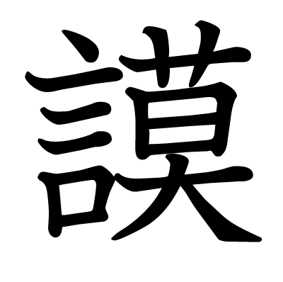
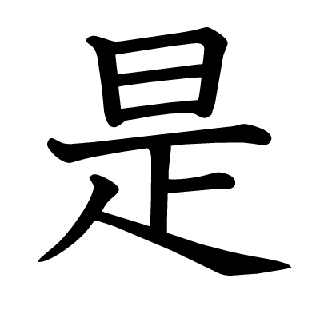
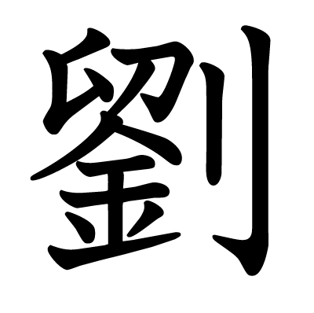
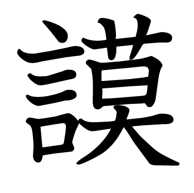
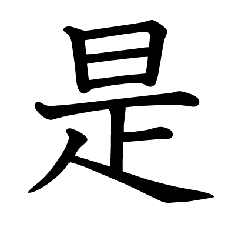
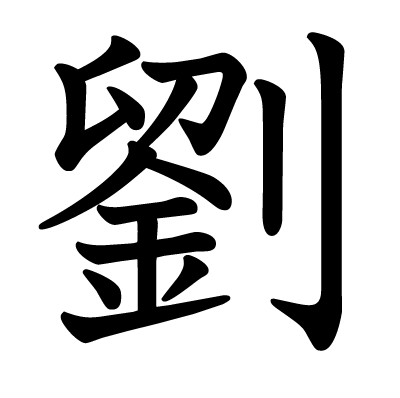

Family name: Mosher
English: Moger
Norman: Mauger
Germanic: Madal
Anglo-Saxon: mæðl-gár
pronunciation:
French [moʒe]
Old French [maʷdʒɘʁ]
English [ˈmeɪ.dʒ.ə(ɹ)]
meaning: council-spear
mæðlan "council, assembly"
gár "spear"
 謨 U+8b28 [mo] plan; deliberate
 是 U+662f [ze] just so; right; justice
 劉 U+5289 [ru] axe; weapon of war
"plan-justice-axe"
Family name: Mosher
English: Moger
Norman: Mauger
Germanic: Madal
Anglo-Saxon: mæðl-gár
pronunciation:
French [moʒe]
Old French [maʷdʒɘʁ]
English [ˈmeɪ.dʒ.ə(ɹ)]
meaning: council-spear
mæðlan "council, assembly"
gár "spear"
 謨 U+8b28 [mo] plan; deliberate
 是 U+662f [ze] just so; right; justice
 劉 U+5289 [ru] axe; weapon of war
"plan-justice-axe"
Christopher meaning: "Christ bearer" Jesus Christ: 基督 基 U+57FA [ki] foundation 督 U+7763 [to] oversee 富 U+5BCC [fu] abundant, enrich 阿 U+963F [awa] cater to
Alan 亜 U+4E9C [a] next 鸞 U+9E1E [ran] great mythical bird
謨 是 劉 基 督 富 阿 亜 鸞
阿基謨 亜督是 鸞富劉